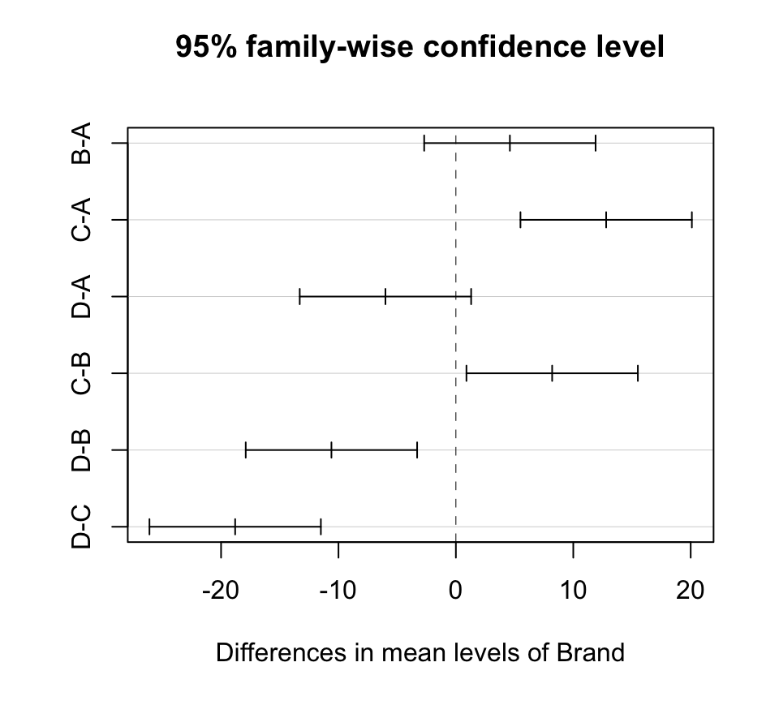
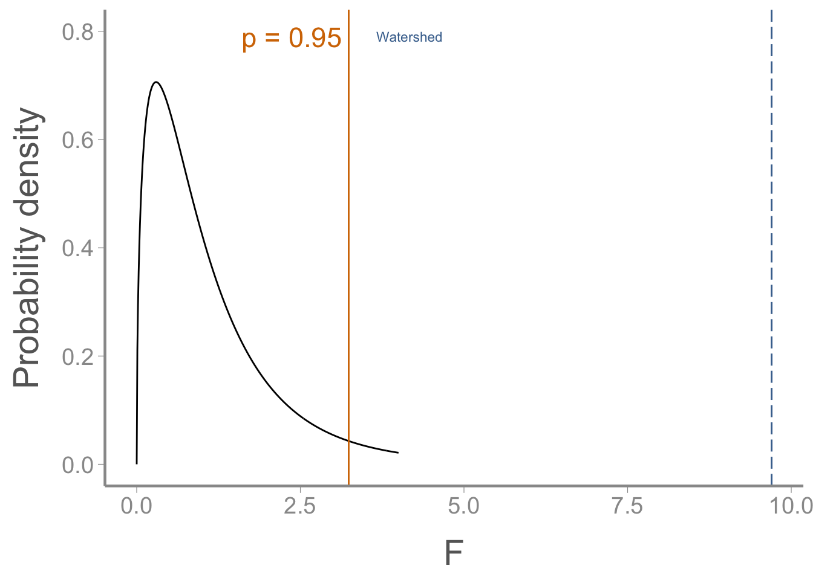
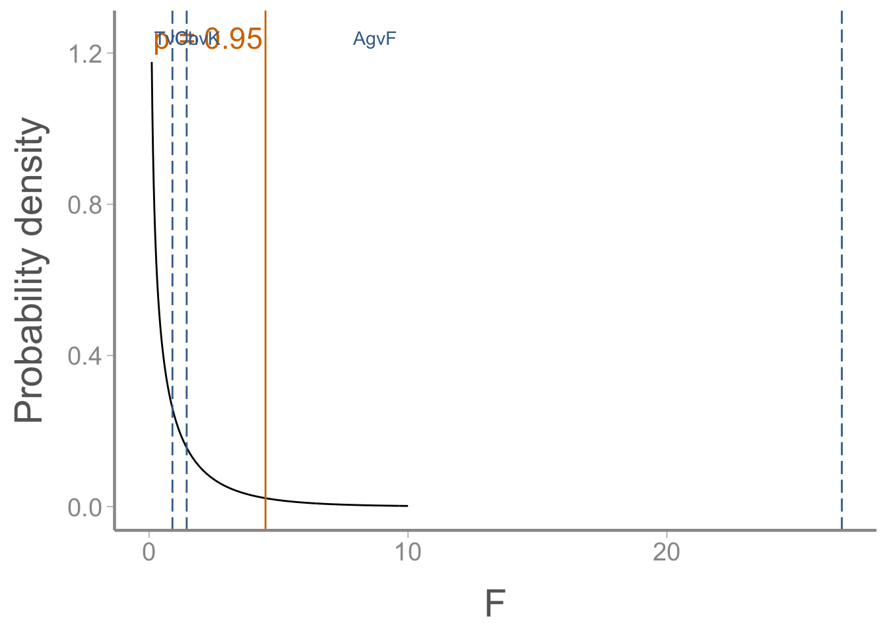
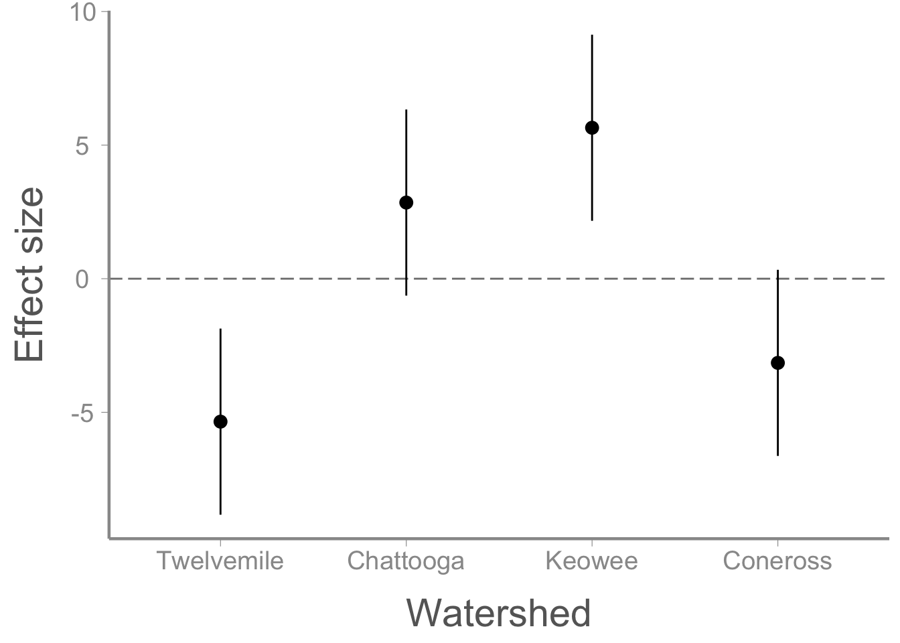

data("sawdata")
library(tidyr)
sawdata <- sawdata %>% pivot_longer(cols= c('A', 'B', 'C', 'D'),
names_to= 'Brand',
values_to= 'angle')
sawdata$Brand <- as.factor(sawdata$Brand)
aov1 <- aov(angle ~ Brand, data = sawdata)
summary(aov1)
#> Df Sum Sq Mean Sq F value Pr(>F)
#> Brand 3 943 314.2 19.3 1.4e-05 ***
#> Residuals 16 260 16.3
#> ---
#> Signif. codes: 0 '***' 0.001 '**' 0.01 '*' 0.05 '.' 0.1 ' ' 1Lab 8: Multiple comparisons and power analysis
FANR 6750: Experimental Methods in Forestry and Natural Resources Research
Fall 2026
Lab 7
- One way ANOVA as a linear model
Using lm()
Using aov()
Performing an ANOVA by hand
- Plotting group means and CI’s
Today’s topics
Post-hoc multiple comparison tests
A priori multiple comparison tests using contrasts
Post-hoc comparison tests
Last week, we fit an ANOVA model using the saw data:
Given the significant F-test, our next question might be which brands differ from each other. In lecture, we saw a few ways to do that:
pairwise.t.test(sawdata$angle, sawdata$Brand, p.adjust.method = "bonferroni")
#>
#> Pairwise comparisons using t tests with pooled SD
#>
#> data: sawdata$angle and sawdata$Brand
#>
#> A B C
#> B 0.542 - -
#> C 8e-04 0.033 -
#> D 0.191 0.004 1e-05
#>
#> P value adjustment method: bonferroni
TukeyHSD(aov1)
#> Tukey multiple comparisons of means
#> 95% family-wise confidence level
#>
#> Fit: aov(formula = angle ~ Brand, data = sawdata)
#>
#> $Brand
#> diff lwr upr p adj
#> B-A 4.6 -2.6998 11.9 0.3079
#> C-A 12.8 5.5002 20.1 0.0007
#> D-A -6.0 -13.2998 1.3 0.1276
#> C-B 8.2 0.9002 15.5 0.0251
#> D-B -10.6 -17.8998 -3.3 0.0037
#> D-C -18.8 -26.0998 -11.5 0.0000Based on these two tests, which brands are different? Use the ?p.adjust help page to find and test other adjustment methods.
How do they compare to each other?
Which method is the strictest (i.e., results in the largest p-values)? Which is the least strict (smallest p-values)?
Do your conclusions about which brands differ depend on which method you use? How might you go about deciding which method to base your conclusions on?
We can also plot the Tukey HSD differences (with confidence intervals):
plot(TukeyHSD(aov1))
That’s all we’ll say about post-hoc multiple comparisons for now because ideally, you would choose to use…
a priori contrasts
Mussel data
Using the mussel data we saw in lecture, let’s explore a priori contrasts in more detail.
data("musseldata")
head(musseldata)
# By default, R will order watershed in alphabetical order
# We will change it to a factor and explicitly set the order to match the order from lecture
musseldata$Watershed <- factor(musseldata$Watershed,
levels = c("Twelvemile", "Chattooga","Keowee", "Coneross"))| Watershed | Length |
|---|---|
| Twelvemile | 16 |
| Twelvemile | 8 |
| Twelvemile | 12 |
| Twelvemile | 17 |
| Twelvemile | 13 |
| Chattooga | 18 |
Questions
Suppose we want to test the 3 a priori comparisons from lecture:
Agricultural (Twelvemile & Coneross) vs. Forested (Chattooga & Keowee)
Within agricultural (Twelvemile vs Coneross)
Within forested (Chattooga vs Keowee)
| Comparison | Null hypothesis | |
|---|---|---|
| 1 | Ag. vs Forested | \(\frac{\mu_T + \mu_{Co}}{2} - \frac{\mu_{Ch} + \mu_{K}}{2} = 0\) |
| 2 | Twelvemile vs Coneross | \(\mu_T - \mu_{Co} = 0\) |
| 3 | Chattooga vs Keowee | \(\mu_{Ch} - \mu_{K} = 0\) |
Constructing contrasts in R
Coefficients
First, we create coefficients for each watershed. Remember, these coefficients are meant to express the hypotheses described above in mathematical terms:
AgvF <- c(1/2, -1/2, -1/2, 1/2) # Note that we could multiply by 2 to get integers without changing the conclusions
TvCo <- c(1, 0, 0, -1)
ChvK <- c(0, 1, -1, 0)In the first contrast, the agricultural watersheds are multiplied by 1/2 (which gives us the mean response of those two watersheds) and the forested watersheds are multiplied by -1/2 (which gives us the mean of those two watersheds). If the null hypothesis is true, the difference in those means will be 0 (which is why we multiplied one group by negative coefficients).
For the other two contrasts, we simply multiply the watersheds of interests by 1 (or -1) to keep them in the contrast and the others by 0 to remove them.
Are they orthogonal?
Next, we need to test whether the constrasts are orthogonal.
Step 1: sum of each contrast’s coefficients is 0:
all(sum(AgvF) == 0, sum(TvCo) == 0, sum(ChvK) == 0)
#> [1] TRUEall() tests whether all its arguments evaluate to TRUE. If it returned FALSE, we would need to check which sum(s) did not equal 0.
Step 2: pairwise dot products are all equal to 0:
all(sum(AgvF * TvCo) == 0,
sum(AgvF * ChvK) == 0,
sum(TvCo * ChvK) == 0)
#> [1] TRUEStep 2 (alternate method): pairwise dot products are all equal to 0 using the %*% operator:
all(AgvF %*% TvCo == 0, AgvF %*% ChvK == 0, TvCo %*% ChvK == 0)
#> [1] TRUEWhen the operands are vectors, %*% does the dot product
Put the contrasts into a matrix
To use contrasts in R, each set of coefficients must be formatted as a column in a matrix.
We can use cbind() for this:
(contrast.mat <- cbind(AgvF, TvCo, ChvK))
#> AgvF TvCo ChvK
#> [1,] 0.5 1 0
#> [2,] -0.5 0 1
#> [3,] -0.5 0 -1
#> [4,] 0.5 -1 0Fit the model with contrasts
It turns out, if we have specified a contrast matrix as we did here, we can include that in the aov function to automatically include the test statistics and p-values associated with each one in the ANOVA table.
First, fit the model:
aov.out <- aov(Length ~ Watershed, data=musseldata,
contrasts=list(Watershed=contrast.mat))Next, partition the sum-of-squares with split= argument:
summary(aov.out,
split = list(Watershed = c("AgvF" = 1,
"TvCo" = 2,
"ChvK" = 3)))
#> Df Sum Sq Mean Sq F value Pr(>F)
#> Watershed 3 393 131 9.70 0.00069 ***
#> Watershed: AgvF 1 361 361 26.76 9.2e-05 ***
#> Watershed: TvCo 1 12 12 0.90 0.35786
#> Watershed: ChvK 1 20 20 1.45 0.24575
#> Residuals 16 216 13
#> ---
#> Signif. codes: 0 '***' 0.001 '**' 0.01 '*' 0.05 '.' 0.1 ' ' 1Notice that the contrast sums of squares sum to the treatment sum of squares. We have successfully partitioned the variation among watersheds into variation between agricultural vs forested watersheds, variation within agricultural watersheds, and variation within forested watersheds.
Visualizing the overall treatment effect
\(\large F_{3, 16}\)

Visualizing the constrasts results
\(\large F_{1, 16}\)

From these results, it is clear that most of the variation among watersheds is due to the difference between agricultural and forested watersheds.
Difference in means for each contrast
We can also calculate differences in the group means (and associated confidence intervals) associated with each contrast:
Group means
library(dplyr)
(group.means <- musseldata %>%
group_by(Watershed) %>%
summarise(mu = mean(Length)))
#> # A tibble: 4 × 2
#> Watershed mu
#> <fct> <dbl>
#> 1 Twelvemile 13.2
#> 2 Chattooga 21.4
#> 3 Keowee 24.2
#> 4 Coneross 15.4Difference in means for Twelvemile vs Coneross
group.means$mu[1] - group.means$mu[4]
#> [1] -2.2Difference in means for Chattooga vs Keowee
group.means$mu[2] - group.means$mu[3]
#> [1] -2.8Difference in means for Ag. vs Forested
mean(group.means$mu[c(1,4)]) - mean(group.means$mu[2:3])
#> [1] -8.5Standard errors for each contrast
SE for Twelvemile vs Coneross
se.contrast(aov.out,
contrast.obj = list(Watershed == "Twelvemile", Watershed == "Coneross"),
data = musseldata)
#> [1] 2.324SE for Chattooga vs Keowee
se.contrast(aov.out,
contrast.obj = list(Watershed == "Chattooga", Watershed == "Keowee"),
data = musseldata)
#> [1] 2.324SE for Ag. vs Forested
se.contrast(aov.out,
contrast.obj = list(Watershed %in% c("Twelvemile","Coneross"),
Watershed %in% c("Chattooga","Keowee")),
data = musseldata)
#> [1] 1.643The %in% function returns TRUE for any elements of the first vector that match an element in the second vector and FALSE otherwise
Estimating confidence intervals
In an ANOVA context, confidence intervals can be constructed using the equation:
\[CI = Point\; estimate \pm t_{\alpha/2,a(n−1)}\times SE\]
As usual, the hard part is computing the SE
Confidence intervals from one-way ANOVA
SE’s for the effect sizes (\(\alpha\)’s)
(effects.SE <- model.tables(aov.out, type="effects", se=TRUE))
#> Tables of effects
#>
#> Watershed
#> Watershed
#> Twelvemile Chattooga Keowee Coneross
#> -5.35 2.85 5.65 -3.15
#>
#> Standard errors of effects
#> Watershed
#> 1.643
#> replic. 5Extract the \(\alpha\)’s and the SEs
# str(effects.SE)
alpha.i <- as.numeric(effects.SE$tables$Watershed)
SE <- as.numeric(effects.SE$se)Compute confidence intervals
tc <- qt(0.975, 4 * (5 - 1))
lowerCI <- alpha.i - tc * SE
upperCI <- alpha.i + tc * SEPlot effects and CIs
Put results into a data frame
CI <- data.frame(Watershed = factor(c("Twelvemile", "Chattooga", "Keowee", "Coneross"),
levels = c("Twelvemile", "Chattooga","Keowee", "Coneross")),
effect.size = alpha.i,
SE,
lowerCI,
upperCI)
head(CI)
#> Watershed effect.size SE lowerCI upperCI
#> 1 Twelvemile -5.35 1.643 -8.8334 -1.8666
#> 2 Chattooga 2.85 1.643 -0.6334 6.3334
#> 3 Keowee 5.65 1.643 2.1666 9.1334
#> 4 Coneross -3.15 1.643 -6.6334 0.3334And plot:
ggplot(CI, aes(x = Watershed, y = effect.size)) +
geom_hline(yintercept = 0, linetype = "longdash", color = "grey50") +
geom_errorbar(aes(ymin = lowerCI, ymax = upperCI), width = 0) +
geom_point() +
scale_y_continuous("Effect size")
Power analysis
Statistical Power
Errors:
Type I: the null hypothesis is true, but you reject it
Type II: the null hypothesis is false, but you fail to reject it
\(\alpha = Pr(Type\;I\;error)\)
\(\beta = Pr(Type\;II\;error)\)
Power = Pr(rejecting a false null) = \(1 − \beta\)
In R functions power.t.test() and power.anova.test(), you provide all but one of the “ingredients” for the hypothesis test and determination of power. Then the missing ingredient is estimated.
Power analysis for a 2-sample t-test
power.t.test(n = NULL,
delta = 3,
sd = 2,
sig.level = 0.05,
power = 0.8)
#>
#> Two-sample t test power calculation
#>
#> n = 8.06
#> delta = 3
#> sd = 2
#> sig.level = 0.05
#> power = 0.8
#> alternative = two.sided
#>
#> NOTE: n is number in *each* groupPower analysis for one-way ANOVA
power.anova.test(groups = 4,
n = 5,
between.var = 360.0,
within.var = 101.2,
power = NULL)
#>
#> Balanced one-way analysis of variance power calculation
#>
#> groups = 4
#> n = 5
#> between.var = 360
#> within.var = 101.2
#> sig.level = 0.05
#> power = 0.9999
#>
#> NOTE: n is number in each groupAssignment
Researchers wish to know if food supplementation affects the growth of nestling Canada warblers. The treatment groups are: (A) No supplementation (i.e., control), (B) low, (C) medium, (D) high, and (E) very high. The response variable is the weight of a ten-day-old nestling.
Create an R Markdown file to do the following:
- Create an
Rchunk to load the data using:
library(FANR6750)
data("warblerWeight")The researchers are interested in the following contrasts. Create a header called “Contrasts” and determine whether these contrasts are orthogonal. Show your work!
Groups A,B vs C,D,E
Groups A vs B
Groups C vs D,E
Groups D vs E
Create a header called “ANOVA analysis”. Under this header, use the
warblerWeightdata to test the null hypothesis of each contrast. This section should include a well-formatted ANOVA table showing the results of the analysis. Use thecaptionargument in thekable()function to include a brief caption for the ANOVA table and theroundargument to print an appropriate number of digits.In addition to the ANOVA table, compute and report, in a second table (with caption), the following for each contrast:
The difference in the means
The SE of the difference in means
The 95% CI for the difference in means
Suppose you wanted to replicate the study with a smaller sample size of \(n = 2\) per treatment group. In a new section called “Power analysis”, calculate and report your power for this new experiment. This section should include both the
Rcode you used to conduct the power analysis, and a brief (1-3 sentence) description of the result and interpretation.Create a new header called “Reflection”. Under this header, answer the following questions:
On a 1-10 scale, how would you rate your confidence in the topics covered in this lab?
What lingering questions/confusion about these topics do you still have?
If you used AI for any part of this assignment, do you think it helped? Did it save time? If you did not use AI, do you think it would have helped?
A few things to remember when finishing the exercise:
Be sure the output type is set to:
output: html_documentBe sure to include your name in the
authorfield of the headerBe sure to set
echo = TRUEin allRchunks so we can see both your code and the outputSee the R Markdown reference sheet for help with creating
Rchunks, equations, tables, etc.If you use AI on any part of your assignment, you must include the full prompt(s) you used and it’s full answer(s) in a separate section titled “AI assistance” at the end of this document.